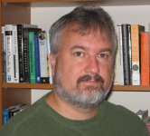

We are pleased to have been able to invite three renowned speakers to lead plenary sessions at this years conference.
Michael Feathers
 Michael Feathers works with Object Mentor Inc. He has been active in the Agile community since its inception, balancing his time between working with, training and coaching various teams around the world. He is a member of the ACM and the IEEE, the author of CppUnit, the original port of JUnit to C++, the author of 'Working Effectively with Legacy Code'(Prentice Hall 2004), and a contributor to 'Beautiful Code' (O'Reilly 2007). He tries to maintain currency in a variety of different languages, but spends more time than he ever expected working with C and C++ teams, because they are often in the most need of help. When he isn't engaged with a team, he spends most of this time investigating ways of altering design over time in code bases.
Invited Session: Big Ball of Money, Big Ball of Mud: Economics and Legacy Code
The IT industry is a large throughway where our ideals hit the hard asphalt of reality. We've spent decades exploring and documenting better ways of developing software. The knowledge is out there yet we consistently see the same mistakes being made over and over again. We seem to be aware of our history yet doomed to repeat it. In this talk, Michael Feathers will share insights he's had while helping a large number of teams in a variety of different business situations deal with some of the nastiest code imaginable. He will cast the problem as an economic problem and show how organizational structure, incentive and motivation lead us precisely to the dilemma we confront, and frame the solutions we can expect to find.
L Peter Deutsch
 Dr. L Peter Deutsch is often described as a "Programmer's programmer". He has been developing software for over fifty years - since the age of 11 - and while his contribution to the field of software development has been legendary, he has never lost his love of programming.
Dr. L Peter Deutsch is often described as a "Programmer's programmer". He has been developing software for over fifty years - since the age of 11 - and while his contribution to the field of software development has been legendary, he has never lost his love of programming.
Peter received the Ph.D. in Computer Science from U.C. Berkeley in 1973. Subsequently at Xerox PARC, he helped develop the Interlisp-D, Cedar Mesa, and Smalltalk-80 programming systems, and was the principal creator of PS, the first high-performance implementation of the Smalltalk language and programming environment on microprocessor-based hardware. PS pioneered the use of Just-In-Time compilation, which is now an important core implementation technology for more recent languages such as Java and C#.
Peter also was the creator of Ghostscript, a highly-portable, high-quality, Open Source implementation of the PostScript language. Peter has therefore been one of the first people to create a business that allowed him to work on a project of his choosing, to release it as free software, and to do so while generating a generous cash flow! He was one of the first "Fellows" at Sun Microsystems, where he advised on Mobile Strategy; his "Eight Fallacies of Networked Computing" still constrain the development of distributed software today.
In 1993, Peter was a co-recipient of the ACM Software System Award, and was also named a Distinguished Alumnus of the U.C. Berkeley Computer Science program. In 1999-2000, he served on the board of the Open Source Initiative. He has contributed to numerous Internet RFCs and is a member of ACM, CPSR, EFF, and the League for Programming Freedom.
Invited Session: A Few Things Learned in 50 Years of Programming
Peter was the primary developer on five major software projects ranging from moderately to wildly successful. He also survived a large failed project, a single-handed attempt to replace all of the VW Smalltalk GUI and graphics classes (late 1980s, in Smalltalk). Drawing on these (primarily the most recent ones) for examples, Peter hopes to demonstrate that some of what he learned from these experiences might be useful to you as well. Questions he might address -- and invite you to address with him -- are ones like:
- When should one use aspects of object technology such as encapsulation, virtual methods, inheritance, delegation, and classes? Are there times when they seem appealing but would make things worse?
- Are the concepts of "compilation" and "interpretation" useful for thinking about things other than programming languages? In what contexts?
- When is caching a great way to get better performance at relatively little design cost, and when is it a blind alley?
- How much generality in a design is enough? Too much? How does one tell?
- How much functionality should go into a single designed unit (class, module, ...)? What happens if you get it wrong (too much or too little)?
- Is representation the most important issue in design? Are interfaces the most important issue in design? Can the answer to both questions be "yes"?
- Does language matter? What is "language", anyway? Is it more than the programming language one uses?
If any of these sound like issues that you have run across, come prepared to share your experiences too.
John Daniels
 John Daniels has over 20 years experience of object/component modelling, design and development. He has also worked as a systems architect, writer, adviser and trainer. He specialises in helping large corporations with system architectures and development processes, as well as providing technical leadership on development projects.
John Daniels has over 20 years experience of object/component modelling, design and development. He has also worked as a systems architect, writer, adviser and trainer. He specialises in helping large corporations with system architectures and development processes, as well as providing technical leadership on development projects.
John gave the first training course on object-oriented design in the UK in 1986. Together with Steve Cook he developed the highly influential Syntropy object method, the subject of a book published in 1994. His second book, UML Components, written with John Cheesman and published in 2001, has been used as a practical guide to designing component and service-based systems by both industrial projects and students. Most recently John has played a central role in the development of the Sun SPOT, a small Java-based wireless sensor device.
A past Chair of both the SPA Specialist Group and the SPA conference, John has made a major contribution to the success of both. He is a regular and popular session leader at the conference, and has also presented at many other international events.
Invited Session: Is Software Practice Advancing
The SPA/OT conference series stretches back over 16 years. Has the practice of building software really advanced during that time? What has got better, and what worse? Where should we be focusing our efforts for improvement? A panel of SPA regulars led by ex-SPA Chair John Daniels, plus newcomers and members of the audience, will be invited to tell us how they see progress in a number of areas including project management, programming languages and tools, design processes, and our interaction with non-IT folk.